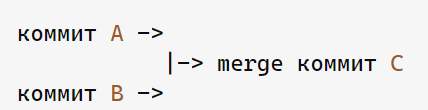

git REBASE и git MERGE, в чем отличие?
git merge создает коммит слияния и после слияния остается 3 коммита в истории. Ты можешь работать дальше с новыми изменениями, прежними либо с обоими

А rebase меняет свою историю
rebase используют если хотят продолжить работу основываясь от чьей-то работы другого человека
merge - оставляет историю
rebase - переписывает историю
git fetch и git pull
можно сказать что git pull это тот же git fetch, но после которого идет merge
то есть git fetch просто сливает данные с удаленного репозитория, в то время как git pull еще и сливает данные слокальным репозиторием
git WorkFlow
простыми словами: это правила работы с репозиторием git
пример
для создания новых фитч делаю отдельную ветку "develop",
после вместо того чтобы ее слить в main ветку, есть ветка "realese", куда сливаются изменения для проверки на баги, если все тесты прошли отлично, то изменения сливают в main.
если же есть какие то баги или ошибки то с ветки release новую фичу перекидывают в "bug fix", где исправляют все ошибки и снова заливают в "realese",
дальше алгоритм повторяется.